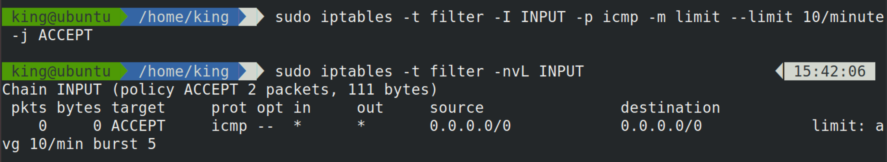
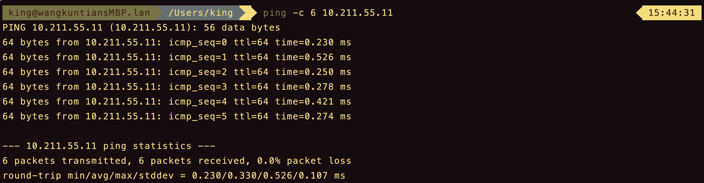
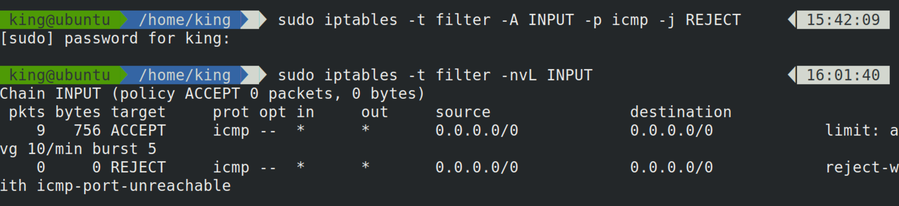
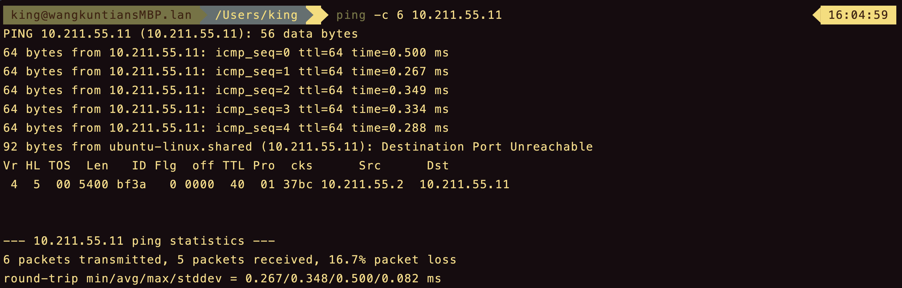
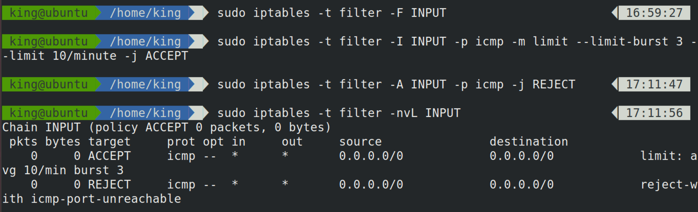

目录
- 源地址
- 目的地址
- 协议类型
- 网卡接口
- 扩展匹配
- tcp
- –tcp-flags
- multiport
- iprange
- string
- time
- connlimit
- limit
源地址
1
2
| iptables -t filter -I INPUT -s 192.168.1.111,192.168.1.112 -j DROP
iptables -t filter -I INPUT -s 192.168.1.0/24 -j DROP
|
-s，用于匹配报文的源地址，可以同时指定多个源地址，每个IP地址用逗号隔开，也可以指定一个网段。
1
| iptables -t filter -I INPUT ! -s 192.168.1.0/24 -j ACCEPT
|
!，用于匹配条件取反。
上面的规则匹配的是，只要源地址不是192.168.1.0/24网段的就会执行接受动作。
目的地址
1
2
| iptables -t filter -I INPUT -d 192.168.1.111,192.168.1.112 -j DROP
iptables -t filter -I INPUT -d 192.168.1.0/24 -j DROP
|
-d，用于匹配报文的目的地址，可以同时指定多个目的地址，每个IP地址用逗号隔开，也可以指定一个网段。
协议类型
1
2
| iptables -t filter -I INPUT -p tcp -s 192.168.1.111,192.168.1.112 -j DROP
iptables -t filter -I INPUT -p udp -s 192.168.1.0/24 -j DROP
|
-p，用于匹配报文的协议类型，可以匹配的协议类型tcp、udp、udplite、icmp、esp、ah、sctp等。
网卡接口
1
| iptables -t filter -I INPUT -p icmp -i enth4 -j DROP
|
-i，用于匹配报文要从哪个网卡接口流入本机。由于匹配条件只是用于匹配报文流入的网卡，所以在OUTPUT链与POSTROUTING链中不能使用此选项。
1
| iptables -t filter -I INPUT -p icmp -O enth4 -j DROP
|
-o，用于匹配报文要从哪个网卡接口流出本机。由于匹配条件只是用于匹配报文流入的网卡，所以在INPUT链与PREROUTING链中不能使用此选项。
扩展匹配
tcp
1
| iptables -t filter -I OUTPUT -d 192.168.1.111 -p tcp -m tcp --sport 22 -j REJECT
|
-p，指定协议。
-m，指定扩展模块。
–sport，source-port，指定源端口。
1
| iptables -t filter -I INPUT -s 192.168.1.111 -p tcp -m tcp --dport 22:25 -j REJECT
|
-p，指定协议。
-m，指定扩展模块。
–dport，destination-port，指定目的端口。
22:25，表示22、23、24、25端口。
1
| iptables -t filter -I INPUT -s 192.168.1.111 -p tcp -m tcp --dport 80: -j REJECT
|
80:，表示80端口到之后的所有的端口（直到65535）。
1
| iptables -t filter -I INPUT -s 192.168.1.111 -p tcp -m tcp --dport :22 -j REJECT
|
–tcp-flags
–tcp-flags，指的就是tcp头中的标志位，可以匹配tcp报文的头部的标志位，然后根据标识位的实际情况实现访问控制的功能。
1
| iptables -t filter -I INPUT -p tcp -m tcp --dport 22 --tcp-flags SYN,ACK,FIN,RST,URG,PSH SYN -j REJECT
|
1
| iptables -t filter -I INPUT -p tcp -m tcp --dport 22 --tcp-flags SYN,ACK,FIN,RST,URG,PSH SYN,ACK -j REJECT
|
还可以用ALL表示SYN,ACK,FIN,RST,URG,PSH。
1
2
| iptables -t filter -I INPUT -p tcp -m tcp --dport 22 --tcp-flags ALL SYN -j REJECT
iptables -t filter -I INPUT -p tcp -m tcp --dport 22 --tcp-flags ALL SYN,ACK -j REJECT
|
–syn选项，匹配tcp第一次握手。
1
| iptables -t filter -I INPUT -p tcp -m tcp --dport 22 --syn -j REJECT
|
multiport
tcp模块中的–sport或者–dport可以指定一个连续的端口范围，但是无法同时指定多个离散的、不连续的端口。
multiport模块中的–sports扩展条件可以同时指定多个离散的源端口。
multiport模块中的–dports扩展条件可以同时指定多个离散的目的端口。
1
| iptables -t filter -I INPUT -s 192.168.1.111 -p tcp -m multiport --dport 22,36,80 -j DROP
|
multiport模块只能用于tcp协议和udp协议，配合-p tcp或者-p udp使用。
iprange
在不使用任何扩展模块下，可以使用-s或者-d即匹配报文的源地址和目的地址，而且在指定IP地址时，可以同时指定多个IP地址，每个IP地址之间用逗号隔开；但是，-s或者-d选项不能一次性地指定一段连续的IP地址范围。
iprange可以指定一段连续的IP地址范围。
1
2
| iptables -t filter -I INPUT -m iprange --src-range 192.168.1.111-192.168.1.146 -j DROP
iptables -t filter -I INPUT -m iprange --dst-range 192.168.1.111-192.168.1.146 -j DROP
|
–src-range，源地址范围。
–dst-range，目的地址范围。
string
string扩展模块，可以指定要匹配的字符串，如果报文中包含对应的字符串，则符合匹配规则。
1
| iptables -t filter -I INPUT -m string --algo bm --string "Hello World" -j ACCEPT
|
–algo，用于指定匹配算法，可选算法有bm和kmp，必须选项，所以不用纠结选择哪个算法，但是必须指定一个。
–string，用于指定需要匹配的字符串。
time
time扩展模块，可以根据时间段匹配报文，如果报文到达的时间在规定时间范围以内，则符合匹配条件。
1
| iptables -t filter -I OUTPUT -p tcp --dport 80 -m time --timestart 09:00:00 --timestop 18:00:00 -j REJECT
|
–timestart，指定开始时间。
–timestop，指定结束时间。
1
| iptables -t filter -I OUTPUT -p tcp --dport 80 -m time --weekdays 6,7 -j REJECT
|
–weekdays，指定每个星期的具体哪一天，可以同时指定多个，用逗号隔开。
1
| iptables -t filter -I OUTPUT -p tcp --dport 80 -m time --monthdays 22,23 -j REJECT
|
1
| iptables -t filter -I OUTPUT -p tcp --dport 80 -m time --datestart 2018-12-01 --datestop 2018-12-25 -j REJECT
|
–datestart，日期开始。
–datestop，日期结束。
–weekdays和–monthdays可以使用“!”取反，其他选项不可以。
connlimit
connlimit扩展模块，可以限制每个IP地址同时链接到server端的链接数量。不用指定IP，其默认就是针对每个客户端IP，即对单IP的并发连接数限制。
1
| iptables -I INPUT -p tcp --dport 22 -m connlimit --connlimit-above 2 -j REJECT
|
–conlimit-above 2，表示限制每个IP的链接数量上限为2。
-p tcp –dport 22，限制每个客户端IP的ssh并发链接数量不能高于2。
1
| iptables -I INPUT -p tcp --dport 22 -m connlimit --connlimit-above 2 --connlimit-mask 24 -j REJECT
|
–connlimit-mask 24，表示某个C类网段。mask表示掩码；24转换成点分十进制就是255.255.255.0。
所以，上面的规则表示，一个最多包含254个IP的C类网络中，同时最多只能有2个ssh客户端连接到当前服务器。
limit
limit扩展模块，可以对报文到达的速率进行限制（限制单位时间内流入的包的数量）。
1
| iptables -t filter -I INPUT -p icmp -m limit 10/minute -j ACCEPT
|

–limit 10/minute -j ACCEPT，表示每分钟最多放行10个包，相当于每6秒最多放行一个包。
ping测试。

配置的规则没有起作用，ping请求的速率完全没有发生任何变化。
这是因为，上面的规则每6秒放行一个包，那么iptables就会计时，每6秒一个轮次，到第6秒时，到达的报文就会匹配到对应的规则，执行ACCEPT。
那么，在第6秒之前到达的包，则无法被上述规则匹配到。
之前总结过，报文会匹配链中的每条规则，如果没有任何一条规则匹配到，则匹配默认动作（链的默认策略）。INPUT链的默认策略是ACCEPT。
我们有两种方法修改。一是，修改INPUT链的默认策略；二是，再增加一条规则。
1
| iptables -t filter -A INPUT -p icmp -j REJECT
|

ping测试。

前5个ping包没有受到限制，之后的ping包已经开始受到规则的限制。
limit模块采用令牌桶算法。
上面的情况可以这样想象，有一个木桶，木桶里放了5块令牌，而且这个木桶最多也只能放下5块令牌，所有报文如果想要出关入关，必须要持有木桶中的令牌才行。这个木桶每隔6秒钟就会产生一块新的令牌，如果此时，木桶的令牌不足5块，那么新生成的令牌就会放在木桶中，超过5块，新生成的令牌就会被丢弃。如果此时有5个报文想要入关，那么这5个报文就会去木桶里找令牌，正好一人一个，快乐地入关了。此时木桶空了，再想有报文想要入关已经没有对应的令牌可以使用，只好等待6秒，新的令牌生成，报文拿着新生成的令牌入关。如果很长一段时间没有新的报文想要入关，木桶里的令牌又会慢慢积攒起来，直到到达5个令牌，直到有人使用它。
–limit，用于指定多长时间生成一个新的令牌。
–limit-brust，用于指定木桶中最多存放几个令牌。

上面的例子表示，令牌桶最多放3个令牌，每分钟生成10个令牌。
–limit，可以选择的时间单位有多种，如 /second、/minute、/hour、/day。